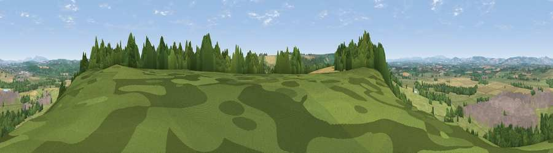

Viewpoint near Ivington
#8624 in England · top 24% of its area beats it · near Ivington · access?Where it is
The exact computed spot (SO 49225 55225). Click the marker for map links.
Public access: no public right of way or access land is recorded at this exact spot — it may be on private land. Computed from Natural England's CRoW access layer and OpenStreetMap rights of way — not the legal definitive map. Always verify locally.
The view, rendered

A 360° render of this exact spot computed from the terrain model, tree cover and land cover — summer colours, afternoon light, calibrated against photographs of famous viewpoints. Real trees, hedges and buildings will differ in detail.
The panorama
Grey silhouette: terrain skyline in each direction (720 bearings, Earth curvature and refraction included). Dashed green: skyline with trees (+15 m) and buildings (+8 m) as obstacles. Blue strip: how far the ground is visible on each bearing.
Where the view opens
Wedge length = distance to the farthest visible ground on that bearing (vegetation-aware). Rings at 10, 25 and 50 km.
What fills the view
32% grassland · 31% cropland · 30% woodland · 8% built-up
Angular shares of the visible panorama (visual magnitude), not map area. Landscape diversity 0.56 (0–1 Shannon).
Key numbers
More beautiful places nearby
The staircase of upgrades: each row has a higher view potential than everything closer. Driving times are estimates from straight-line distance, calibrated against real road routing — check an actual route before setting out.
| Place | Direction | Drive | Score |
|---|---|---|---|
| Viewpoint near Westhope | SW · 4 km | ~9 min | 70.5 |
| Viewpoint near Bodenham | SE · 4 km | ~10 min | 71.4 |
| Viewpoint near Westhope | SW · 5 km | ~10 min | 77.0 |
| Viewpoint near Weobley | SW · 10 km | ~20 min | 77.5 |
| Viewpoint near Weobley | WSW · 11 km | ~21 min | 79.7 |
| Viewpoint near Leinthall Starkes | NNW · 15 km | ~26 min | 80.3 |
| Gatley Hill | NNW · 15 km | ~27 min | 82.6 |
| Titterstone Clee | NNE · 25 km | ~40 min | 83.8 |
52.19291, -2.74421 · source: screening · position refined by local search. Computed location — check access rights before visiting.